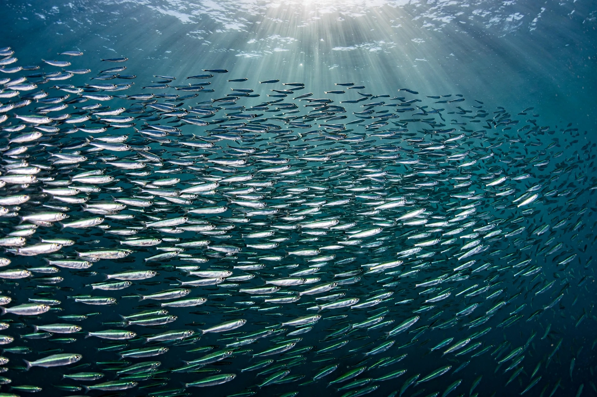

The Peruvian anchoveta (Engraulis ringens) is a species of fish of the anchovy family, Engraulidae, from the Southeast Pacific Ocean. It is one of the most commercially important fishery species in the world, as well as the main source of fishmeal.

| Kingdom | Animalia |
|---|---|
| Phylum | Chordata |
| Class | Actinopterygii |
| Order | Clupeiformes |
| Family | Engraulidae |
| Genus | Engraulis |
| Species | E. ringens |
| Binomial name | Engraulis ringens Jenyns, 1842 |
The Peruvian anchoveta is found in the southeastern Pacific Ocean off the coasts of Peru and Chile, within the cold, nutrient-rich waters of the Humboldt Current system. It forms enormous schools in surface waters, feeding mainly on phytoplankton and zooplankton.
The Peruvian anchoveta fishery is among the largest single-species fisheries on Earth. In peak years catches have exceeded 12 million tonnes, though landings fluctuate dramatically with El Niño events, which warm coastal waters and disperse the schools. Most of the catch is reduced to fishmeal and fish oil for export, used in aquaculture and livestock feeds; a smaller share goes to direct human consumption.
Anchoveta populations are strongly influenced by oceanographic conditions. During the 1972 El Niño, combined with heavy fishing pressure, the stock collapsed, an event often cited as a classic case of fishery overexploitation interacting with environmental variability. Management since then has included seasonal closures, quotas, and real-time monitoring of juvenile abundance.
Anchoveta are a keystone forage species, supporting seabirds (including guano-producing cormorants, boobies, and pelicans), sea lions, and larger predatory fish in the Humboldt ecosystem.